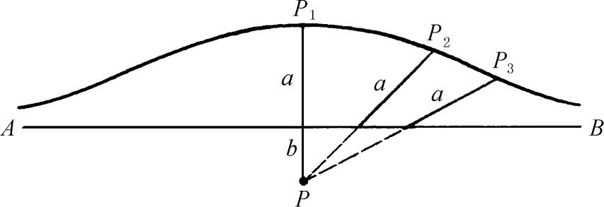
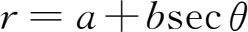
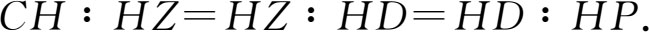
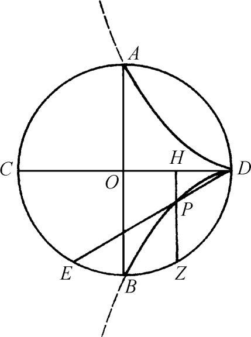

5．一些特殊曲线
古典希腊数学家虽也引进并研究过一些不常见的曲线如割圆曲线，但几何上只许研究用尺规所能作的图形这一禁令把那些曲线打入冷宫。亚历山大时代的人则比较能够冲破这种限制，所以阿基米德可以毫无顾虑地引入螺线。在这一时期里还引入了一些别的曲线。
尼科梅德斯（公元前约200年）以他所定义的蚌线出名。他先取一点P及一直线AB（图5.9）。然后选定一长度a，并在从P出发穿过AB的所有射线上，从交点起往前截取长度a。这样定出的端点便是蚌线上的点。例如图中的P1，P2及P3，便是蚌线上的点。

图5.9
若b是从P到AB的垂直距离，且若射线上从其与AB交点处量取的长度a是朝向P侧的，则依a＞b，a＝b，及a＜b三种情形而得其他三种曲线。因此蚌线共有四种，都是尼科梅德斯所定义的。这曲线的极坐标方程是

。尼科梅德斯利用这曲线来三等分角和作出倍立方体(1)。据说尼科梅德斯发明了绘蚌线的仪器。仪器本身的性质远不如当时的数学家热衷于制作仪器一事重要。尼科梅德斯蚌线和直线及圆是最早能用仪器绘出的曲线，也是最早比较为人们所熟知的。
狄奥克莱斯（Diocles，公元前2世纪末）在其《论点火玻璃》（On Burning - glasses）一书中引用所谓蔓叶线解决了倍立方问题。这曲线的定义如下：设AB及CD是圆的互相垂直的直径（图5.10），EB及BZ是相等的弧段。作ZH垂直于CD，再作ED。ZH与ED的交点便给出蔓叶线上一点P。狄奥克莱斯把BC弧上所有的E及BD弧上所有的Z（弧BE＝弧BZ）所定出的一切点P的轨迹叫做蔓叶线。我们可以证明

所以HZ和HD是CH和HP之间的两个比例中项。这就解决了倍立方问题。若取O为原点，a为半径，OD及OA为坐标轴，则蔓叶线的直角坐标方程是y2（a＋x）＝（a-x）3。这方程所表示的曲线包括图中曲线的弯折部分，而这一部分是狄奥克莱斯所未曾考虑的。

图5.10